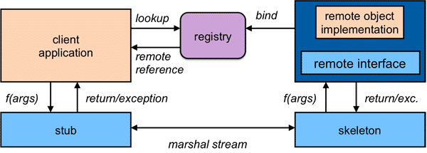
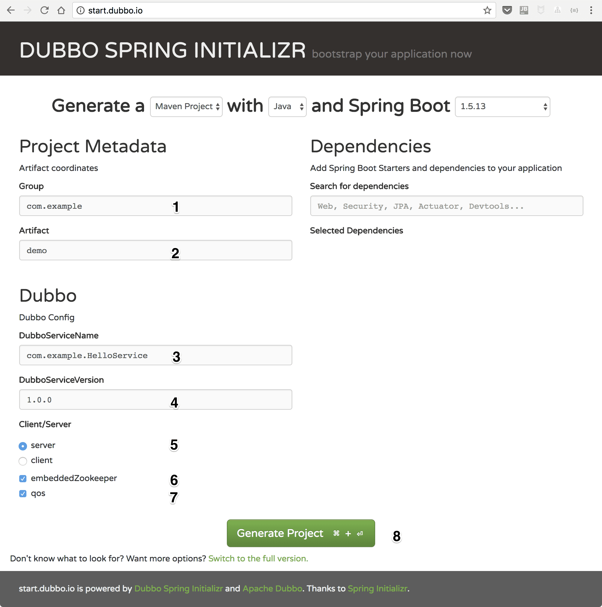

第一个 Dubbo 应用¶
Java RMI 简介¶
Java RMI （Remote Method Invocation）- 远程方法调用，能够让客户端像使用本地调用一样调用服务端 Java 虚拟机中的对象方法。RMI 是面向对象语言领域对 RPC （Remote Procedure Call）的完善，用户无需依靠 IDL 的帮助来完成分布式调用，而是通过依赖接口这种更简单自然的方式。
Java RMI 工作原理¶
一个典型的 RMI 调用如下图所示：
- 服务端向 RMI 注册服务绑定自己的地址，
- 客户端通过 RMI 注册服务获取目标地址，
- 客户端调用本地的 Stub 对象上的方法，和调用本地对象上的方法一致，
- 本地存根对象将调用信息打包，通过网络发送到服务端，
- 服务端的 Skeleton 对象收到网络请求之后，将调用信息解包，
- 然后找到真正的服务对象发起调用，并将返回结果打包通过网络发送回客户端。

(来源：https://www.cs.rutgers.edu/~pxk/417/notes/images/rpc-rmi_flow.png)
{kind=link}
Java RMI 基本概念¶
Java RMI 是 Java 领域创建分布式应用的技术基石。后续的 EJB 技术，以及现代的分布式服务框架，其中的基本理念依旧是 Java RMI 的延续。在 RMI 调用中，有以下几个核心的概念：
-
通过**接口**进行远程调用
-
通过客户端的 **Stub 对象**和服务端的 **Skeleton 对象**的帮助将远程调用伪装成本地调用
- 通过 **RMI 注册服务**完成服务的注册和发现
对于第一点，客户端需要依赖接口，而服务端需要提供该接口的实现。
对于第二点，在 J2SE 1.5 版本之前需要通过 rmic 预先编译好客户端的 Stub 对象和服务端的 Skeleton 对象。在之后的版本中，不再需要事先生成 Stub 和 Skeleton 对象。
下面通过示例代码简单的展示 RMI 中的服务注册和发现
服务端的服务注册¶
Hello obj = new HelloImpl(); // #1
Hello stub = (Hello) UnicastRemoteObject.exportObject(obj, 0); // #2
Registry registry = LocateRegistry.createRegistry(1099); // #3
registry.rebind("Hello", stub); // #4
说明：
- 初始化服务对象实例，
- 通过 UnicastRemoteObject.exportObject 生成可以与服务端通讯的 Stub 对象，
- 创建一个本地的 RMI 注册服务，监听端口为 1099。该注册服务运行在服务端，也可以单独启动一个注册服务的进程，
- 将 Stub 对象绑定到注册服务上，这样，客户端可以通过 Hello 这个名字查找到该远程对象。
客户端的服务发现¶
Registry registry = LocateRegistry.getRegistry(); // #1
Hello stub = (Hello) registry.lookup("Hello"); // #2
String response = stub.sayHello(); // #3
说明：
- 获取注册服务实例，在本例中，由于没有传入任何参数，假定要获取的注册服务实例部署在本机，并监听在 1099 端口上，
- 从注册服务中查找服务名为 Hello 的远程对象，
- 通过获取的 Stub 对象发起一次 RMI 调用并获得结果。
理解 RMI 的工作原理和基本概念，对掌握现代分布式服务框架很有帮助，建议进一步的阅读 RMI 官方教材 1。
Dubbo 基本概念¶
现代的分布式服务框架的基本概念与 RMI 是类似的，同样是使用 Java 的 Interface 作为服务契约，通过注册中心来完成服务的注册和发现，远程通讯的细节也是通过代理类来屏蔽。具体来说，Dubbo 在工作时有以下四个角色参与：
- 服务提供者 - 启动时在指定端口上暴露服务，并将服务地址和端口注册到注册中心上
- 服务消费者 - 启动时向注册中心订阅自己感兴趣的服务，以便获得服务提供方的地址列表
- 注册中心 - 负责服务的注册和发现，负责保存服务提供方上报的地址信息，并向服务消费方推送
- 监控中心 - 负责收集服务提供方和消费方的运行状态，比如服务调用次数、延迟等，用于监控
- 运行容器 - 负责服务提供方的初始化、加载以及运行的生命周期管理

部署阶段
- 服务提供者在指定端口暴露服务，并向注册中心注册服务信息。
- 服务消费者向注册中心发起服务地址列表的订阅。
运行阶段
- 注册中心向服务消费者推送地址列表信息。
- 服务消费者收到地址列表后，从其中选取一个向目标服务发起调用。
- 调用过程服务消费者和服务提供者的运行状态上报给监控中心。
基于 API 的 Dubbo 应用¶
Dubbo 的应用一般都是通过 Spring 来组装的。为了快速获得一个可以工作的 Dubbo 应用，这里的示例摒弃了复杂的配置，而改用面向 Dubbo API 的方式来构建服务提供者和消费者，另外，注册中心和监控中心在本示例中也不需要安装和配置。
在生产环境，Dubbo 的服务需要一个分布式的服务注册中心与之配合，比如，ZooKeeper。为了方便开发，Dubbo 提供了直连2以及组播3两种方式，从而避免额外搭建注册中心的工作。在本例中，将使用组播的方式来完成服务的注册和发现。
定义服务契约¶
public interface GreetingsService {
String sayHi(String name); // #1
}
说明：
- 定义了一个简单的服务契约 GreetingsService，其中只有一个方法 sayHi 可供调用，入参是 String 类型，返回值也是 String 类型。
提供契约的实现¶
public class GreetingsServiceImpl implements GreetingsService { // #1
@Override
public String sayHi(String name) {
return "hi, " + name; // #2
}
}
说明：
- 服务提供者需要实现服务契约 GreetingsService 接口。
- 该实现简单的返回一个欢迎信息，如果入参是 dubbo，则返回 hi, dubbo。
实现 Dubbo 服务提供方¶
public class Application {
public static void main(String[] args) throws IOException {
ServiceConfig<GreetingsService> service = new ServiceConfig<>(); // #1
service.setApplication(new ApplicationConfig("first-dubbo-provider")); // #2
service.setRegistry(new RegistryConfig("multicast://224.5.6.7:1234")); // #3
service.setInterface(GreetingsService.class); // #4
service.setRef(new GreetingsServiceImpl()); // #5
service.export(); // #6
System.in.read(); // #7
}
}
说明：
- 创建一个 ServiceConfig 的实例，泛型参数信息是服务接口类型，即 GreetingsService。
- 生成一个 ApplicationConfig 的实例，并将其装配进 ServiceConfig。
- 生成一个 RegistryConfig 实例，并将其装配进 ServiceConfig，这里使用的是组播方式，参数是
multicast://224.5.6.7:1234。合法的组播地址范围为：224.0.0.0 - 239.255.255.255 - 将服务契约 GreetingsService 装配进 ServiceConfig。
- 将服务提供者提供的实现 GreetingsServiceImpl 的实例装配进 ServiceConfig。
- ServiceConfig 已经具备足够的信息，开始对外暴露服务，默认监听端口是 20880。
- 为了防止服务端退出，按任意键或者 ctrl-c 退出。
实现 Dubbo 服务调用方¶
public class Application {
public static void main(String[] args) {
ReferenceConfig<GreetingsService> reference = new ReferenceConfig<>(); // #1
reference.setApplication(new ApplicationConfig("first-dubbo-client")); // #2
reference.setRegistry(new RegistryConfig("multicast://224.5.6.7:1234")); // #3
reference.setInterface(GreetingsService.class); // #4
GreetingsService greetingsService = reference.get(); // #5
String message = greetingsService.sayHi("dubbo"); // #6
System.out.println(message); // #7
}
}
说明：
- 创建一个 ReferenceConfig 的实例，同样，泛型参数信息是服务接口类型，即 GreetingService。
- 生成一个 ApplicationConfig 的实例，并将其装配进 ReferenceConfig。
- 生成一个 RegistryConfig 实例，并将其装配进 ReferenceConfig，注意这里的组播地址信息需要与服务提供方的相同。
- 将服务契约 GreetingsService 装配进 ReferenceConfig。
- 从 ReferenceConfig 中获取到 GreetingService 的代理。
- 通过 GreetingService 的代理发起远程调用，传入的参数为 dubbo。
- 打印返回结果 hi, dubbo。
运行¶
完整的示例在 https://github.com/apache/dubbo-samples/tree/master/java/dubbo-samples-api 上提供。在完整的示例中，由于配置了 exec-maven-plugin，可以很方便的在命令行下通过 maven 的方式执行。当然，您也可以在 IDE 里直接执行，但是需要注意的是，由于使用了组播的方式来发现服务，运行时需要指定 -Djava.net.preferIPv4Stack=true。
构建示例¶
通过以下的命令来同步示例代码并完成构建：
- 同步代码：git clone https://github.com/apache/dubbo-samples.git
- 构建：mvn clean package
$ git clone https://github.com/apache/dubbo-samples.git
$ cd dubbo-samples/java/dubbo-samples-api/
$ mvn clean package
INFO] Scanning for projects...
[INFO]
[INFO] ------------------------------------------------------------------------
[INFO] Building dubbo-samples-api 1.0-SNAPSHOT
[INFO] ------------------------------------------------------------------------
[INFO]
[INFO] --- maven-clean-plugin:2.5:clean (default-clean) @ dubbo-samples-api ---
...
[INFO] ------------------------------------------------------------------------
[INFO] BUILD SUCCESS
[INFO] ------------------------------------------------------------------------
[INFO] Total time: 2.182 s
[INFO] Finished at: 2018-05-28T14:56:08+08:00
[INFO] Final Memory: 20M/353M
[INFO] ------------------------------------------------------------------------
当看到 BUILD SUCCESS 的时候表明构建完成，下面就可以开始进入运行阶段了。
运行服务端¶
通过运行以下的 maven 命令来启动服务提供者：
$ mvn -Djava.net.preferIPv4Stack=true -Dexec.mainClass=com.alibaba.dubbo.samples.server.Application exec:java
[INFO] Scanning for projects...
[INFO]
[INFO] ------------------------------------------------------------------------
[INFO] Building dubbo-samples-api 1.0-SNAPSHOT
[INFO] ------------------------------------------------------------------------
[INFO]
[INFO] --- exec-maven-plugin:1.6.0:java (default-cli) @ dubbo-samples-api ---
log4j:WARN No appenders could be found for logger (com.alibaba.dubbo.common.logger.LoggerFactory).
log4j:WARN Please initialize the log4j system properly.
log4j:WARN See http://logging.apache.org/log4j/1.2/faq.html#noconfig for more info.
first-dubbo-provider is running.
当 first-dubbo-provider is running. 出现时，代表服务提供者已经启动就绪，等待客户端的调用。
运行客户端¶
通过运行以下的 maven 命令来调用服务：
$ mvn -Djava.net.preferIPv4Stack=true -Dexec.mainClass=com.alibaba.dubbo.samples.client.Application exec:java
[INFO] Scanning for projects...
[INFO]
[INFO] ------------------------------------------------------------------------
[INFO] Building dubbo-samples-api 1.0-SNAPSHOT
[INFO] ------------------------------------------------------------------------
[INFO]
[INFO] --- exec-maven-plugin:1.6.0:java (default-cli) @ dubbo-samples-api ---
log4j:WARN No appenders could be found for logger (com.alibaba.dubbo.common.logger.LoggerFactory).
log4j:WARN Please initialize the log4j system properly.
log4j:WARN See http://logging.apache.org/log4j/1.2/faq.html#noconfig for more info.
hi, dubbo
可以看到， hi, dubbo 是从服务提供者返回的执行结果。
快速生成 Dubbo 应用¶
Dubbo 还提供了一个公共服务快速搭建基于 Spring Boot 的 Dubbo 应用。访问 http://start.dubbo.io 并按照下图所示来生成示例工程：

说明：
- 在 Group 中提供 maven groupId，默认值是 com.example。
- 在 Artifact 中提供 maven artifactId，默认值是 demo。
- 在 DubboServiceName 中提供服务名，默认值是 com.example.HelloService。
- 在 DubboServiceVersion 中提供服务的版本，默认值是 1.0.0。
- 在 Client/Server 中选取本次构建的工程是服务提供者 (Server) 还是服务消费者 (Client)，默认值是 server。
- 使用 embeddedZookeeper 作为服务注册发现，默认为勾选。
- 是否激活 qos 端口，默认为不勾选，如果勾选可以通过 22222 端口访问。
- 点击 Generate Project 即可下载生成好的工程。
在本例中展示的是服务提供者，同样的，通过在生成界面选取 client 来生成对应的服务消费者。
运行¶
用 IDE 打开生成好的工程，可以发现应用是一个典型的 Spring Boot 应用。程序的入口如下所示：
@SpringBootApplication
public class DemoApplication {
public static void main(String[] args) {
new EmbeddedZooKeeper(2181, false).start(); // #1
SpringApplication.run(DemoApplication.class, args); // #2
}
}
说明：
- 在 2181 端口上启动嵌入式 ZooKeeper。
- 启动 Spring Boot 上下文。
可以直接在 IDE 中运行，输出结果如下：
2018-05-28 16:59:38.072 INFO 59943 --- [ main] a.b.d.c.e.WelcomeLogoApplicationListener :
████████▄ ███ █▄ ▀█████████▄ ▀█████████▄ ▄██████▄
███ ▀███ ███ ███ ███ ███ ███ ███ ███ ███
███ ███ ███ ███ ███ ███ ███ ███ ███ ███
███ ███ ███ ███ ▄███▄▄▄██▀ ▄███▄▄▄██▀ ███ ███
███ ███ ███ ███ ▀▀███▀▀▀██▄ ▀▀███▀▀▀██▄ ███ ███
███ ███ ███ ███ ███ ██▄ ███ ██▄ ███ ███
███ ▄███ ███ ███ ███ ███ ███ ███ ███ ███
████████▀ ████████▀ ▄█████████▀ ▄█████████▀ ▀██████▀
:: Dubbo Spring Boot (v0.1.0) : https://github.com/dubbo/dubbo-spring-boot-project
:: Dubbo (v2.0.1) : https://github.com/alibaba/dubbo
:: Google group : http://groups.google.com/group/dubbo
2018-05-28 16:59:38.079 INFO 59943 --- [ main] e.OverrideDubboConfigApplicationListener : Dubbo Config was overridden by externalized configuration {dubbo.application.name=dubbo-demo-server, dubbo.application.qosAcceptForeignIp=false, dubbo.application.qosEnable=true, dubbo.application.qosPort=22222, dubbo.registry.address=zookeeper://localhost:2181?client=curator, dubbo.registry.id=my-registry, dubbo.scan.basePackages=com.example} #1
...
2018-05-28 16:59:39.624 INFO 59943 --- [ main] com.example.demo.DemoApplication : Started DemoApplication in 1.746 seconds (JVM running for 2.963)
说明：
- 输出中打印的以 dubbo. 开头的配置信息，定义在 main/resources/application.properties 中。
通过 Telnet 管理服务¶
生成工程的时候如果选择了激活 qos 的话，就可以通过 telnet 或者 nc 来管理服务、查看服务状态。
$ telnet localhost 22222
Trying 127.0.0.1...
Connected to localhost.
Escape character is '^]'.
████████▄ ███ █▄ ▀█████████▄ ▀█████████▄ ▄██████▄
███ ▀███ ███ ███ ███ ███ ███ ███ ███ ███
███ ███ ███ ███ ███ ███ ███ ███ ███ ███
███ ███ ███ ███ ▄███▄▄▄██▀ ▄███▄▄▄██▀ ███ ███
███ ███ ███ ███ ▀▀███▀▀▀██▄ ▀▀███▀▀▀██▄ ███ ███
███ ███ ███ ███ ███ ██▄ ███ ██▄ ███ ███
███ ▄███ ███ ███ ███ ███ ███ ███ ███ ███
████████▀ ████████▀ ▄█████████▀ ▄█████████▀ ▀██████▀
dubbo>
dubbo>ls
As Provider side:
+------------------------------+---+
| Provider Service Name |PUB|
+------------------------------+---+
|com.example.HelloService:1.0.0| Y |
+------------------------------+---+
As Consumer side:
+---------------------+---+
|Consumer Service Name|NUM|
+---------------------+---+
目前 qos 支持以下几个命令，更详细的信息请查阅官方文档4：
- ls：列出消费者、提供者信息
- online：上线服务
- offline：下线服务
- help：联机帮助
总结¶
在本文中，从 RMI 开始，介绍了 Java 领域分布式调用的基本概念，也就是基于接口编程、通过代理将远程调用伪装成本地、通过注册中心完成服务的注册和发现。
然后为了简单起见，使用简单的组播注册方式和直接面向 Dubbo API 编程的方式介绍了如何开发一个 Dubbo 的完整应用。深入的了解 ServiceConfig 和 ReferenceConfig 的用法，对于进一步的使用 Spring XML 配置、乃至 Spring Boot 的编程方式有这很大的帮助。
最后，简单的介绍了如何通过 Dubbo 团队提供的公共服务 start.dubbo.io 快速搭建基于 Spring Boot 的 Dubbo 应用，并通过 qos 来做 Dubbo 服务的简单运维。